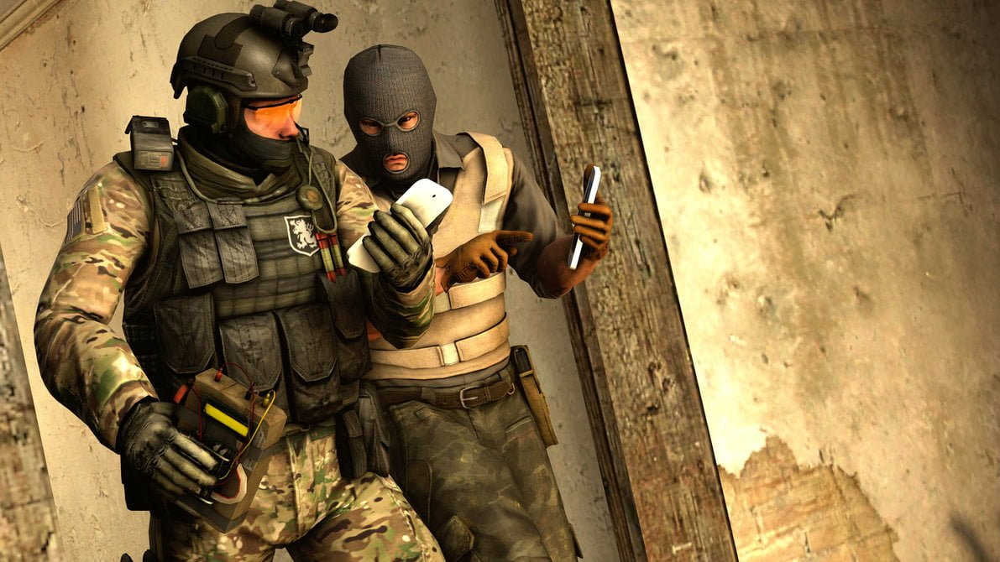
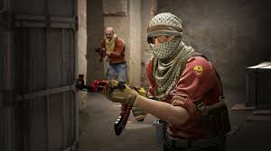

Sobre o Jogo

Counter-Strike: Global Offensive, também conhecido como CS:GO, é um jogo de tiro em primeira pessoa (FPS) desenvolvido pela Valve Corporation. Lançado em 2012, é a quarta edição da franquia Counter-Strike, que teve início como um mod para o jogo Half-Life em 1999.
Jogabilidade

A jogabilidade do CS:GO é baseada em partidas competitivas entre duas equipes, uma de terroristas e outra de contra-terroristas. Cada equipe possui objetivos específicos, como plantar ou desarmar uma bomba, resgatar ou manter reféns, ou simplesmente eliminar todos os membros da equipe adversária.